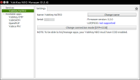
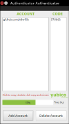
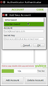

Smartcard features on the YubiKey NEO
YubiKeys are a line of small and low-cost hardware security tokens popular for their one-time password (OTP) functionality. While the basic YubiKey model is limited to generating OTPs when plugged into a USB port, the more expensive NEO model adds contactless NFC support for OTP and it can be configured as a smartcard—which opens up the possibility of several other use cases. When we first looked at the NEO in April, the smartcard functionality was in a temperamental state. Fortunately, things have matured quite a bit since then, which significantly increases the YubiKey NEO's value as a security tool.
To recap, both the regular YubiKey and the NEO include two virtual configuration "slots" that can be set up independently. Each slot can be loaded with a secret credential that the device will use to generate a security code in response to a button press (one slot is bound to a short tap, the other to a longer press-and-hold). The YubiKey presents itself as a standard USB human interface device (HID) keyboard, so there are no drivers required on any platform: one plugs it in and it works. In this basic mode, each slot can be set up to send a static password, an Open Authentication (OATH)-compatible Hash-based message authentication code (HMAC)-based One-Time Password (HOTP), a password for Yubico's own OTP service, or an HMAC-SHA1 challenge-response code.
But this set of options is a bit of a limitation. HOTP is not widely deployed, at least not in comparison to the other OATH standard, Time-based One-Time Passwords (TOTP). The YubiKey cannot compute TOTP passwords internally, because doing so requires a realtime clock. A YubiKey can generate a TOTP password when used in conjunction with a software program running on the computer that the YubiKey is plugged into (using the HMAC-SHA1 challenge-response mode); Yubico provides both a desktop Qt application and an Android app for this purpose.
This is a useful feature, since so many services use TOTP, but the YubiKey is still limited to storing two credentials. Software-based competitors, like the Google Authenticator app for Android, can store any number of credentials.
But this is where the smartcard features can make up some of the difference. The NEO includes a Common Criteria–certified JavaCard secure element, which can be loaded with several JavaCard applets. One of the applets developed by Yubico is an OATH implementation that can store multiple TOTP credentials, essentially allowing the NEO to serve as a Google Authenticator substitute—at least, a substitute on any device that the NEO can be connected to (which, of course, does not include every Android device on the market).
Smarts and cards

Back in April, however, the tools required to get the JavaCard applets running on the NEO were in a bit of a rough state and the relevant information was limited to whatever one could find by scouring the forums. To be fair, of course, anyone without prior experience in the world of configuring and using JavaCard hardware will face a difficult learning curve when tackling the task, but the YubiKey software was spotty and the documentation sparse. For example, it relied on an external tool to manage and upload applets to the JavaCard element—one that suffered from incompatibilities with modern Linux systems.
Subsequently, though, Yubico wrote its own command-line program for interfacing with the NEO's JavaCard element, developed a Qt-based graphical tool for configuring the NEO's mode and applet settings, and put a considerable amount of work into developing a suite of applets. A handful of these applets come with the NEO firmware, which spares new users the pain of compiling and installing the applets altogether. But, if users so choose, they can still update the applets manually.
All of Yubico's client software is available from the Yubico site, although most of it is also now packaged by mainstream Linux distributions. Running:
ykneomgr -a
will return the applets currently installed on an attached NEO, listed by their JavaCard Application Identifiers (AID). For example:
0: a000000527200101
1: d2760000850101
2: d2760001240102000000000000010000
3: a000000308000010000100
4: a000000527210101
Determining which applets correspond to the AIDs, though, requires some searching, as there is no official list. In this instance, there is a forum thread that sheds some light. In order, these applets are the basic NEO OTP functionality, the NFC data-exchange functionality, an OpenPGP applet, a Personal Identity Verification (PIV) applet, and the HOTP/TOTP OATH applet.
A new applet can be installed with ykneomgr -i and an existing applet deleted with ykneomgr -D. The basic OTP and NFC applets should not be deleted; they implement the core functionality of the device and (at least as of today) source code is not available for them. Source is provided only for the OATH applet and OpenPGP applet (the latter of which is a slightly modified version of Joeri de Ruiter's GPLv2+ licensed JavaCard OpenPGP applet). The JavaCard element can be protected with a PIN code to prevent unauthorized users from removing or replacing applets; it is clearly a good idea to enable this protection, lest some attacker replace an applet on one's YubiKey.
Time for TOTP

The OATH applet is, for many users, the key piece of JavaCard functionality, because it effectively removes the two-slot credential limitation (how many HOTP/TOTP secrets it can hold varies, depending on their size, but the number is quite large) and is compatible with the majority of two-factor authentication options in widespread usage. To use it, the NEO must first be placed into the proper mode (by default, the JavaCard functionality is switched off, for wider compatibility). The graphical neoman application sports a selector for toggling OTP mode and JavaCard mode (labeled CCID) independently.
The other half of the OATH applet is the client-side YubiOATH application. The desktop version is Python-based; instructions and dependencies are listed on the application web page, though the instructions for launching it are incorrect. With the CCID-enabled NEO plugged into a USB port, the user can launch the OATH client application with
python ./ui_systray.py &
This spawns a system-tray/taskbar application; right-clicking on its icon, one can open the main window, which shows a list of the configured OATH accounts, the current codes for each account, and a timer indicating how long the TOTP codes have before they expire and a new code regenerated. In the Android YubiOATH app, one can swipe the NEO past the device NFC sensor and see the TOTP codes generated.

The user experience is more or less identical to that of mobile apps like Google Authenticator (in fact, the Android version of Yubico's client software even mimics the Google Authenticator icon). But there are a few differences. The important distinction is that the desktop OATH application has no access to any cameras attached to the system (nor other image-input methods); it can therefore not be used to load any HOTP/TOTP secrets that are only presented as QR codes.
In my tests, only about half of the two-factor authentication services I configured displayed a text version of the HOTP/TOTP secret credential in addition to the QR code version. The good news is that, because HOTP/TOTP credentials are stored on the NEO, the NEO can be set up with the Yubico Authenticator app on an Android device, and it will subsequently work on the desktop software, too. But for those without an Android device, the Yubico desktop software will not work with a QR-code–only configuration process.
PGP and other applet options
After the OATH applet, the most popular JavaCard applet for the NEO seems to be the OpenPGP applet. Support for smartcard configuration and usage is built in to GnuPG, and the NEO's OpenPGP applet works without too much trouble. With the NEO plugged in, all configuration is done through the GnuPG command-line tools.
Typing gpg –card-edit opens the connection to the card; the admin command enters configuration mode, generate generates a key pair, and so forth. Earlier versions of the applet could only generate a new key pair on the card itself (and could not import an existing key), but this has been fixed in subsequent releases.
The one limitation to be aware of with the OpenPGP applet is that the hardware has limits on the size and types of key it can store. It supports maximum key sizes of 2048 bits for RSA keys and 320 bits for Elliptic Curve Cryptography (ECC) keys (of the finite-field, ECC-over-GF(p) variety), due to the limitations of the cryptographic coprocessor on the NXP A700x security microcontroller chip. There are several key types allowed, but each must be explicitly supported—in fact, GnuPG's ECC support was only added in the GnuPG 2.1 development branch, and is regarded as unstable. Yubico's Klas Lindfors told forum members that the company has been experimenting with other elliptical curve keys, although at the moment it does not feel that GnuPG 2.1 has stabilized enough to roll out support.
For those interested in exploring the OpenPGP functionality in detail, Yubico's Simon Josefsson has written a detailed account of how the NEO's OpenPGP applet can be used—including quite a few less-than-common options like embedding a JPEG photo into the key.
The PIV applet implements an US National Institute of Standards and Technology (NIST) identity standard called SP 800-73-3. This is a FIPS specification that stores a secret key on the device, which is then usable to encrypt or sign messages. In practice, this is far less likely to be of practical value than the OpenPGP applet for those who do not have to work with US Government–mandated FIPS-compliant systems.
But other applets are certainly possible, and there appear to be users on the discussion forum who have undertaken development of their own applets—including, for example, a Bitcoin wallet applet. Yubico also seems to be working on other possibilities; it has evidently developed a yet-to-be-released Bitcoin applet of its own (which has been alluded to on the forums and is evident in the company's GitHub repository).
U2F and more
One final tidbit of trivia concerns Yubico's support for the Universal 2nd Factor (U2F) two-factor authentication standard. The standard is published by the FIDO Alliance, an industry group to which Yubico belongs. Back when the first public drafts began to appear in early 2014, Yubico announced its intention to support U2F in the YubiKey product line, although exactly how it would do so remained unclear.
The company has now released two separate U2F-capable products. One is a U2F-only token called the FIDO Security Key. The other, however, is a refresh of the NEO that adds U2F functionality alongside the OTP and smartcard functions. But only those NEOs shipped from Yubico after October 1 support U2F, since it is implemented as a firmware-level feature. Older NEOs cannot be field-upgraded to support U2F because all YubiKey models—by design—cannot be reflashed with new firmware.
Since the product name was unchanged and there is no easy way to tell one NEO from another on the outside, this refresh spawned a fair amount of confusion among YubiKey customers. Some of them, in fact, took the company to task for advertising that the NEO was certified for U2F but neither clearly stating that some NEOs would remain incompatible, nor offering purchasers any upgrade path.
On the other hand, it does seem like implementing U2F support in a JavaCard applet would be possible. That idea has been floated multiple times on the forums, so far with no response either way from the company. Then again, NEO owners' frustration with the U2F feature may simply motivate some third-party developers to undertake the task on their own.
As always, it is difficult to form an objective conclusion about the value proposition that the YubiKey NEO provides. The NEO remains quite a bit more expensive than the other YubiKey models ($50 compared to $25), but with working smartcard functionality, it does quite a bit more. The OATH applet support removes the two-slot configuration limit, which is a big deal to many customers. The case for the OpenPGP and PIV applets is harder to make. There are many other smartcard options on the market, most of which are cheaper than the NEO and many of which do not come with the same key-size limitations. When it comes to getting the most value out of a piece of hardware, though, the addition of OpenPGP functionality in such a compact and portable format is appealing, indeed.
The software side of the product remains muddled in several key
places: out-of-date or incorrect documentation, numerous inconsistencies
(even on simple matters like program names), and very little in the way
of support. The company does seem to be committed to free software,
though—its releases tend to be GPLv3 unless they are derived
from other works—so perhaps it will simply require some
additional engagement with the community to make the simple user
experience of the basic YubiKey viable for its more complex features
as well.
| Index entries for this article | |
|---|---|
| Security | Authentication |
Posted Nov 6, 2014 2:18 UTC (Thu)
by luto (subscriber, #39314)
[Link] (3 responses)
U2F requests are transferred over something that is extremely similar if not identical to an ISO7816-4 APDU, which is, coincidentally, the same application layer used to talk to JavaCard apps. Unfortunately, I don't think that an AID has ever been allocated for U2F on actual CCID/smart card devices, and client software doesn't support it.
I'm currently working on making OpenSSH accept U2F keys. Stay tuned (or contact me if you're familiar with OpenSSH internals and want to help).
Posted Nov 6, 2014 2:50 UTC (Thu)
by raof (subscriber, #57409)
[Link]
Looks like it'd be possible to implement an XU2F mechanism for SASL, too, which might be an interesting use of a weekend's investigation.
Posted Nov 6, 2014 4:03 UTC (Thu)
by gutschke (subscriber, #27910)
[Link]
Also, that makes things easier, as the PAM module suffers from the problem of only providing a server-side pluggable module, but really we need one both for the server and for the client. With SSH, it's a little more obvious how that would work.
Overall, I am duly impressed with U2F. It is such an elegant and useful solution to this problem space. It supports a very small number of crypto primitives, which makes it more likely that the implementation doesn't have glaring bugs. It is a lot more secure than most other token-based protocols (e.g. it protects against most phishing attacks). It can support an arbitrary number of accounts and users per token. And in most cases, it is safe to permanently leave a token in each computer that one uses.
Everything considered, it is just super easy to use for end-users.
For $6, you can buy an inexpensive token from Plug-Up that lets you get started with U2F (search on Amazon). Although, most users would probably want to buy the $18 token from Yubico, as it is mechanically much more sturdy, and as it comes with a push button, which makes the user interface a little friendlier.
And if you plan on leaving the token in the computer, then the NEO-n is quite attractive, as it only sticks out by a millimeter or two. Less chance of breaking it off and damaging the USB port. Of course, $60 is a lot of money for that extra convenience. So, probably only worth it for laptops that get used a lot and that are more prone to physical abuse than desktops.
I can't wait to see how U2F will be implemented for either NFC or Bluetooth, so that I can fully retire my copy of Google Authenticator. Unfortunately, it is not yet usable for computing devices that don't have USB host ports; and that means all mobile devices (no, it doesn't work with USB OTG either).
The NEO (but not the NEO-n) has the hardware to support NFC. But traditionally, Yubico has been playing it safe and doesn't enable firmware upgrades. So, even once there is a spec for U2F over NFC, don't expect current-model NEOs to be upgradable. If you don't need the other protocols, there is not much benefit in buying a NEO over the $18 token; they both have the same form-factor.
Posted Nov 6, 2014 19:18 UTC (Thu)
by luto (subscriber, #39314)
[Link]
That being said, the U2F draft got it a bit wrong. The fifth byte of a command APDU should not be bits 23:16 of the payload length; it should be zero. This is unlikely to make a difference in the near future.
Why did I just spend the time to look up such an overcomplicated international interindustry specification?
Posted Nov 6, 2014 16:20 UTC (Thu)
by dunlapg (guest, #57764)
[Link] (3 responses)
There may be options just like Yubikey NEO but better, but Google doesn't seem to know about them.
I type in "gpg smartcard usb", and you get:
Maybe my persistence and/or Google-fu is just lacking; but actually making something that is lightweight and has lots of normal hackers using it is worth a bit of a premium.
(Alternately, you could maybe list a couple you think have a similar form factor but are both cheaper and allow larger key sizes.)
Posted Nov 6, 2014 22:54 UTC (Thu)
by pbonzini (subscriber, #60935)
[Link] (2 responses)
The key size limitation is not important. You really, really want to use subkeys anyway, even for signing and even if you don't use a smartcard, so that you can leave the master key in a safe place. There is then really no reason to have 4096 bit subkeys since they make every operation slower and they are much easier to replace than the master key.
Yes, it's somewhat of a geeky gizmo, but it is pretty sleek. I haven't played with OATH/TOTP yet, but the OpenPGP applet is already worth the price of the NEO.
For example, my github and kernel.org accounts are now authenticated with an ssh key on the NEO, so I get two-factor authentication for free; and using the recent Unix socket forwarding addition of OpenSSH 6.7 I even got smartcard forwarding to work. That is, I can keep the NEO attached to my laptop, connect to a remote workstation and sign stuff/push branches without having to copy the secret keys around.
Posted Nov 7, 2014 23:06 UTC (Fri)
by wahern (subscriber, #37304)
[Link] (1 responses)
The -A switch already allowed you to forward your authentication agent, and that's been around for many years. Was there some special setup on your servers that prevented this? I've been using GnuPG's gpg-agent and -A forwarding since I bought my YubiKey NEO well over a year ago. And I was using OpenSSH's ssh-agent, -A forwarding, and file-based keys since... I can't remember how long.
I had been buying smartcards every few years since about 2002, but always tossed them in exasperation at the convoluted setup. It wasn't until the Yubikey NEO, building off of GnuPG's built-in OpenPGP smart card standard support, that I finally hit the jackpot. No messing around with OpenSC, no separate card reader, no USB headaches, and no complex configurations. (It's trivial to setup gpg-agent on a new machine.) It's just really been a dream.
As far as SSH goes, U2F really adds nothing of consequence. If someone wants secure smart card support with SSH, they simply cannot go wrong with the Yubikey NEO and the OpenPGP applet. Period. U2F will be nice, but at this point the public-key crypto component is vaporware.
Posted Nov 8, 2014 8:18 UTC (Sat)
by pbonzini (subscriber, #60935)
[Link]
I also wanted to forward the signing key, so that I could sign git tags and push them without juggling between local and remote repositories.
Posted Nov 6, 2014 19:21 UTC (Thu)
by jstultz (subscriber, #212)
[Link] (1 responses)
Thus the tools like gpg won't find the key, and more worrisome, the ykneomgr will also fail to find the key (which keeps you from changing the settings back) and it will appear like its been bricked.
I had to add the new productid to:
And only then, would the ykneomgr find the key and allow me to change modes again.
I was particularly grumpy since their support web-forum *requires* an OTP validation to log in and ask question. Not much use when the device seems bricked.
Posted Nov 6, 2014 20:05 UTC (Thu)
by NightMonkey (subscriber, #23051)
[Link]
Posted Nov 7, 2014 8:20 UTC (Fri)
by ras (subscriber, #33059)
[Link] (1 responses)
Actually, Yubikeys works perfectly will with most Android phones. You just need a USB OTG adaptor. Tap the Yubikey, and it works like any other USB key with your Android device. The business I work for depends on it.
So maybe the author didn't know that. But then we have another source of confusion: NEO has NFC. Many Android phones also have NFC. I've never done it, but I presume since my Visa card will communicate over NFC, a Javacard could too and so my wild guess says can Android phone with NFC can talk to NEO. Actually, I know that bit's true, because I used NEO with an Android phone and NFC. What I haven't done is used the NEO's Javacard stuff over NFC.
Posted Nov 7, 2014 19:44 UTC (Fri)
by n8willis (subscriber, #43041)
[Link]
Nate
Posted Nov 18, 2014 15:14 UTC (Tue)
by nye (guest, #51576)
[Link] (5 responses)
"Currently sold YubiKey NEOs do not support the development or management of JavaCard applets"
I'm not sure how to interpret this. The comments do include people using U2F successfully, so that seems to imply that the version they're selling is the current (post Oct 1) one. Has this version lost the functionality described in this article? Is it just that it's not formally 'supported', but is actually available?
Sorry if this question is really dumb, but I'm totally confused.
[0] They ship internationally, but then there's no telling what random customs fees you may be stuck with - importing anything from outside the EU into England comes with a risk of seemingly arbitrary charges that can go well beyond 20% VAT with no explanation.
Posted Nov 18, 2014 15:46 UTC (Tue)
by tialaramex (subscriber, #21167)
[Link] (4 responses)
Historically you would have needed a large tome purchased from the relevant government office at intervals in order to classify each item, and then a table to consult to find out what the rules were for each class. These days you can go from a descrption to a commodity code to the rates using a simple web interface.
For example an old-fashioned jukebox is code 8519201000 and would incur 6% import duty.
Posted Nov 18, 2014 17:04 UTC (Tue)
by nye (guest, #51576)
[Link] (3 responses)
Well, I spent four hours trying to work out why a keyboard attracted something in the vicinity of 40% before giving up (not today, obviously - at the time).
>and is documented if you care to take an interest.
Feel free to fuck off whenever you like.
Posted Nov 18, 2014 22:49 UTC (Tue)
by flussence (guest, #85566)
[Link] (2 responses)
Posted Nov 19, 2014 11:50 UTC (Wed)
by nye (guest, #51576)
[Link] (1 responses)
Posted Nov 19, 2014 18:23 UTC (Wed)
by zlynx (guest, #2285)
[Link]
I recommend using a 5m cooling off period before posting responses. It works for me. I discard many things without sending them.
Smartcard features on the YubiKey NEO
Smartcard features on the YubiKey NEO
Smartcard features on the YubiKey NEO
Smartcard features on the YubiKey NEO
Smartcard features on the YubiKey NEO
- How-tos for gpg with no (clear) links to actual products you can buy
- Cards separate from readers
- Information about Yubikey NEO
Smartcard features on the YubiKey NEO
Smartcard features on the YubiKey NEO
Smartcard features on the YubiKey NEO
Smartcard features on the YubiKey NEO
/usr/lib/pcsc/drivers/ifd-ccid.bundle/Contents/Info.plist
Smartcard features on the YubiKey NEO
Smartcard features on the YubiKey NEO
Smartcard features on the YubiKey NEO
Smartcard features on the YubiKey NEO
Import duty
Import duty
Import duty
Import duty
Import duty